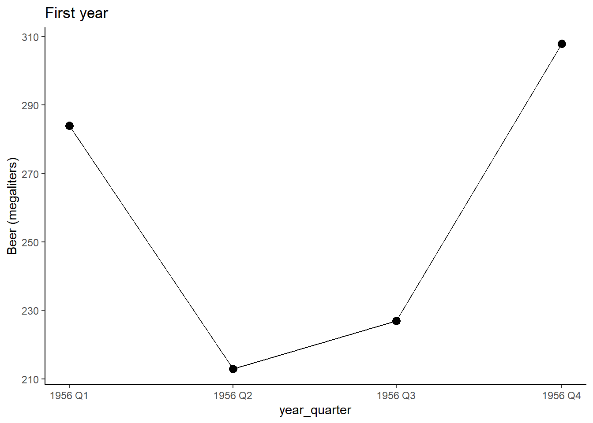
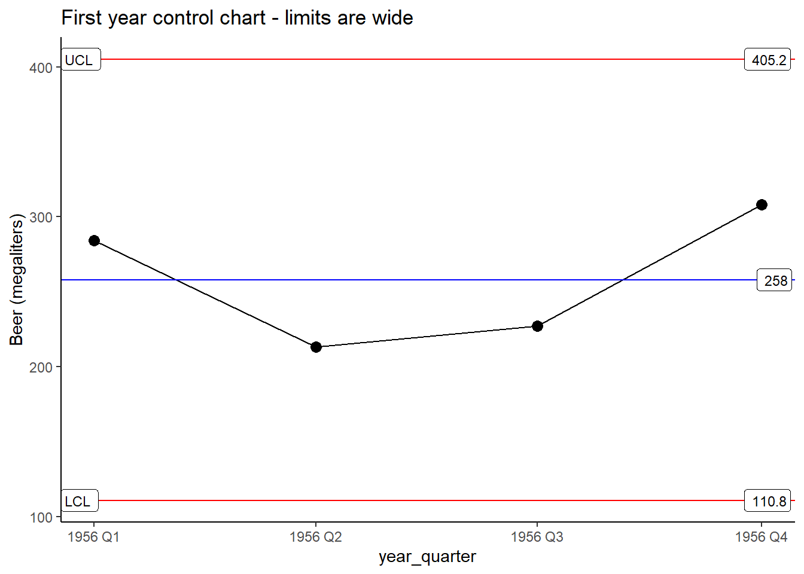
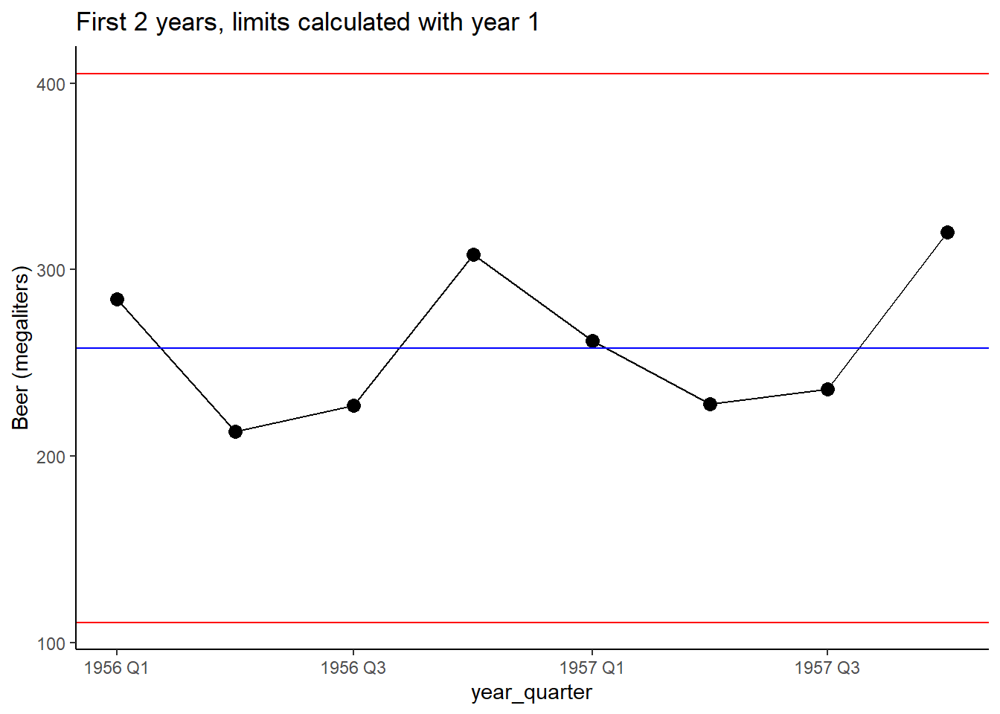
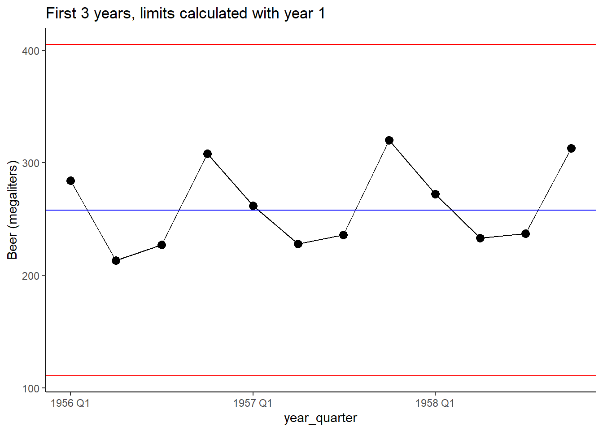
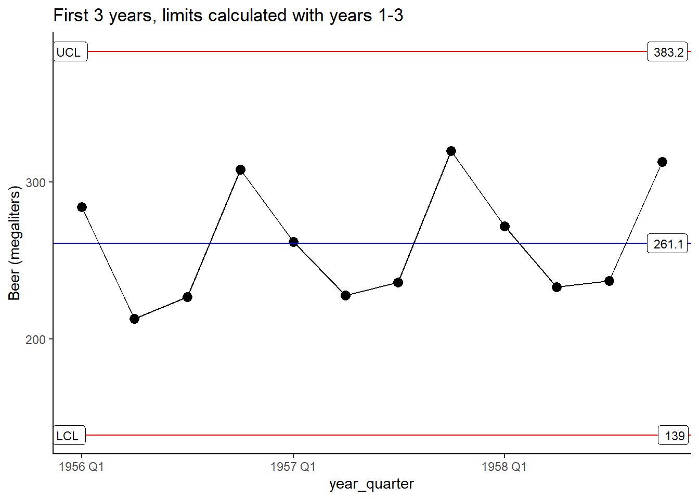
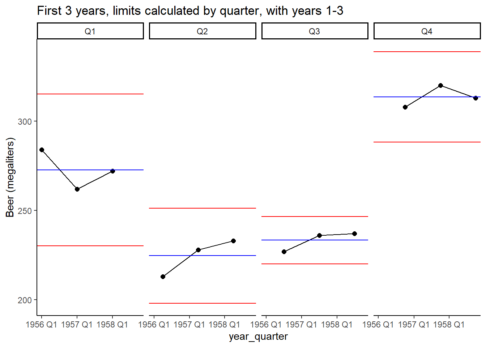
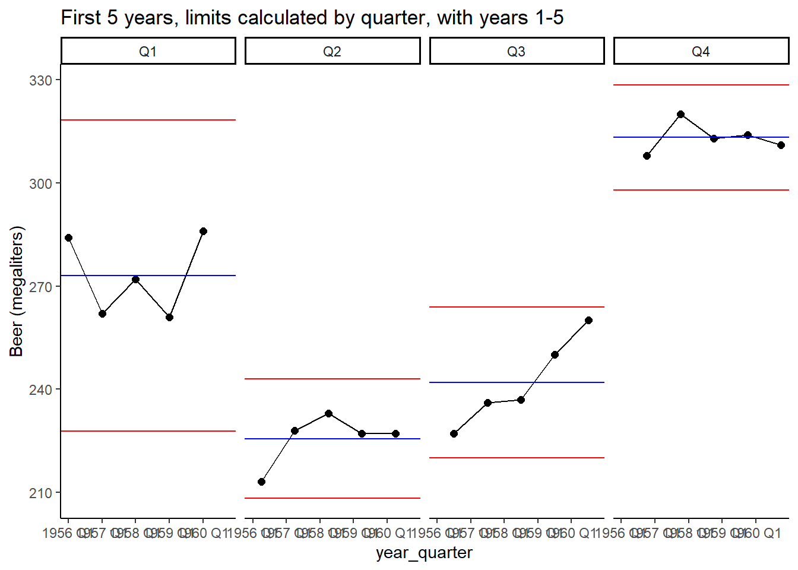
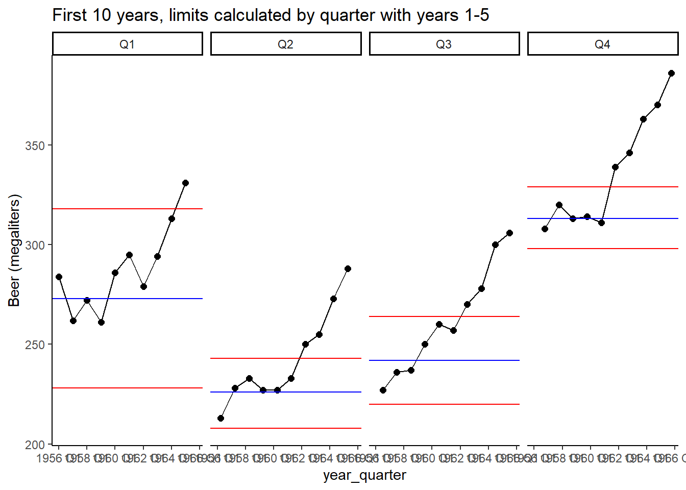

I’d like to walk through an example of using SPC (statistical process control) to understand a non-manufacturing dataset. Control charts are useful for any process that happens over time. For this project I’ll use the aus_production dataset from the fpp3 package. It contains quarterly data from 1951 - 2010 of production amounts of beer, tobacco, bricks, cement, electricity, and gas.
Rather than looking at the entire dataset, I’d like to walk through it as if this was a new process we’re tracking, and starting at the beginning. I’ll be using XmR aka ImR control charts, the chart for individual values. The value is plotted with lines marking the average, and upper/lower limits. The limits are known as 3 sigma limits, and we can use them as a clue to see if the process is changing over time and whether it is predictable. The limits are based on the differences between successive values.
Code
#import aus_production dataset from fpp3aus <-data.frame(aus_production)#original variable Quarter contains both year YYYY and quarter, want to split for my purposes here - probably will want to separate by quarter#the year YYYY: as "year"aus$year =as.integer(sapply(strsplit(as.character(aus$Quarter), split =" "), "[[", 1))#the quarter Q1, Q2, Q3 etc as "quarter"aus$quarter =sapply(strsplit(as.character(aus$Quarter), split =" "), "[[", 2)#original variable was called "Quarter" which is confusing, rename it to be more descriptivecolnames(aus)[colnames(aus) =='Quarter'] <-'year_quarter'aus %>%pivot_longer(cols =-c(year_quarter,year, quarter), names_to ="product", values_to ="quantity")
Say we have recently started tracking production of beer (in megaliters). We have just the past year’s data, recorded by quarter:
Code
beer_df <-select(aus, quarter, year, year_quarter, Beer)beer_df[1:4, ] %>%ggplot(aes(x = year_quarter, y = Beer))+geom_point(size =3)+geom_line()+labs(y ="Beer (megaliters)", title ="First year")

Good so far. We see Q2 and Q3 are lowest, but we don’t know if this is meaningful or if this pattern will hold in future years. We could set up a control chart with just this year. Typically we would want more values before calculating limits, but we can start with as few values as we want really. Just remember these limits aren’t based on much data, and should be treated with a grain of salt, and revisited when we have more data.
Code
beer_df[1:4, ] %>%ggplot(aes(x = year_quarter, y = Beer))+geom_point(size =3)+geom_line()+stat_QC(method ="XmR", auto.label =TRUE)+labs(y ="Beer (megaliters)", title ="First year control chart - limits are wide")

Based on the control chart, we predict future values will fall somewhere between 110.8 and 405.2. Let’s add another year and see what happens.
First, I’ll add the next year using the limits calculated on just year 1 (1956).
Code
beer_df[1:8, ] %>%ggplot(aes(x = year_quarter, y = Beer))+geom_point(size =3)+geom_line()+#stat_QC(method = "XmR", auto.label = TRUE)+geom_hline(yintercept =c(405.2,258, 110.8), color =c("red", "blue", "red"))+labs(y ="Beer (megaliters)", title ="First 2 years, limits calculated with year 1")

It does look like there might be a quarterly pattern already. We might want to start breaking out quarters and tracking them on their own. I’d like to see if production in each quarter is growing, declining, or staying the same.
With year 3 I’ll start tracking by quarter in addition to all quarters together:
Code
beer_df[1:12, ] %>%ggplot(aes(x = year_quarter, y = Beer))+geom_point(size =3)+geom_line()+#stat_QC(method = "XmR", auto.label = TRUE)+geom_hline(yintercept =c(405.2,258, 110.8), color =c("red", "blue", "red"))+labs(y ="Beer (megaliters)", title ="First 3 years, limits calculated with year 1")

Code
beer_df[1:12, ] %>%ggplot(aes(x = year_quarter, y = Beer))+geom_point(size =3)+geom_line()+stat_QC(method ="XmR", auto.label =TRUE)+#geom_hline(yintercept = c(405.2,258, 110.8), color = c("red", "blue", "red"))+labs(y ="Beer (megaliters)", title ="First 3 years, limits calculated with years 1-3")

Recalculating the limits with 3 years of data has narrowed them somewhat, but I want to point this out - they aren’t very different than the limits calculated with only year 1 (4 data points!). It’s ok to calculate early and revisit.
The quarterly differences are very clear now, let’s look at each quarter:
Code
beer_df[1:12, ] %>%ggplot(aes(x = year_quarter, y = Beer))+geom_point(size =2)+geom_line()+stat_QC(method ="XmR", auto.label =FALSE)+facet_wrap(~quarter, ncol =4)+labs(y ="Beer (megaliters)", title ="First 3 years, limits calculated by quarter, with years 1-3")

The limits are very wide (relatively) due to the small number of data points per quarter. However, they are all much narrower than when we looked at all quarters together, indicating that the differences between quarters were inflating the variation observed.
Tracking by quarters - years 1-5
Suppose we want to see production go up over time, the chart will help us see if this is happening.
Code
beer_df[1:20, ] %>%ggplot(aes(x = year_quarter, y = Beer))+geom_point(size =2)+geom_line()+stat_QC(method ="XmR", auto.label =FALSE)+facet_wrap(~quarter, ncol =4)+labs(y ="Beer (megaliters)", title ="First 5 years, limits calculated by quarter, with years 1-5")

Code
#I'm just entering the limits by hand, it's quicker right now than doing with#code, though that's easy to do with ggQClimits5df <-data.frame(quarter =c("Q1", "Q2","Q3","Q4"),UL =c(318, 243, 264, 329), avg =c(273, 226, 242, 313), LL =c(228, 208, 220, 298) )
Limits for Q1 are still relatively wider than other quarters. I don’t see an upward trend yet, maybe in Q2 and Q3? With SPC, we’re not sure yet…I have seen many patterns like this in the real world that turned out to just be noise.
Tracking by quarters - years 1-10
If I made an animation of this, we could see it unfold point by point, I’ll work on that another time. (Right now I’m holding myself to a deadline so here’s another static plot - what do the first 10 years look like?)
Before we look at this, note that I’m locking the limits we calculated with years 1-5 data.
Code
beer_df[1:40, ] %>%ggplot(aes(x = year_quarter, y = Beer))+geom_point(size =2)+geom_line()+geom_hline(data = limits5df, aes(yintercept = UL), color ="red")+geom_hline(data = limits5df, aes(yintercept = LL), color ="red")+geom_hline(data = limits5df, aes(yintercept = avg), color ="blue")+facet_wrap(~quarter, ncol =4)+labs(y ="Beer (megaliters)", title ="First 10 years, limits calculated by quarter with years 1-5")

A few interesting things (what do you see?): Seems like definite upward trends.
But when might we start to conclude that?
Q2 and Q3 both have a point above the upper limit in year 7, Q4 exceeds the upper limit in year 6. Any point outside a limit indicates something unusual. After these years, the points continue to rise, at year 7 or 8 I would believe there really is an upward trend and start tracking differently.
Reflection
Sometimes there might be a tendency to overreact to data points, control charts are great for putting data in context. While it might look like there is an upward trend in some quarters, we got better confirmation of a change around year 6/7. Around year 8 I would switch to a trended control chart, fitting a regression line and putting limits around it to continue monitoring beer production.
Next Steps
I’ll put together trended control charts, and discuss the interpretation and calculations used.